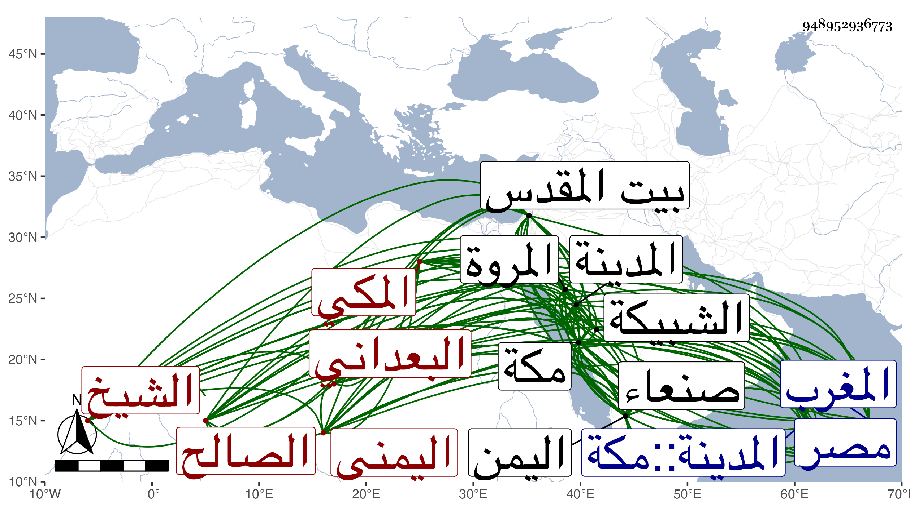

0902Sakhawi.DawLamic.ITO20230111-ara1.EIS1600.948952936773
Biography ID: 948952936773
64
علي بن محمد بن يحيى الشيخ الصالح نور الدين البعداني اليمني المكي قطنها أكثر من أربعين سنة ، وأجاز له في سنة ثمانمائة إبراهيم بن أحمد بن عبد الهادي وأحمد بن أقبرص وعمر بن محمد بن أحمد بن عبد الهادي والمحب بن منيع وجماعة وكان صالحا مديما للعبادة يعتمر كل يوم من الأشهر الثلاثة مرتين ويحيى الليل بالطواف والصلاة والتلاوة وينام في الربع الأخير منه قائما بحوائج من يقصده زائد الاحتمال كثير السخاء والبشاشة سيما لأهل الحرمين بل أهل المدينة بحيث يكون يوم قدومه على أهلها عندهم كالعيد وزاد في بدايته صحبة صاحبه الشيخ عمر العرابي من طريق الماشي وما كان قوتهما إلا ورق الشجر وهو السبب في نقله عمر من اليمن لمكة واشترى له دارا بالمروة وبناها له وأخرى لولده محمد وزوجه ابنته ، وزار القدس واعتمر منه وهو القائم بعمارة الرباط المشهور به لجهة فرجان امرأة الأشرف بن الأفضل بل صارت ترسل إليه في كل سنة بوقر جلبه من الطعام والطيب والفرش والشمع والسليط وما يحتاج إليه فيعمل للفقراء الأسمطة في رمضان وربيع والأعياد بل شرع في عمارة ما تقدم من مسجد الخيف ثم في بناء بئر على التي بدرب الماسي وكانت قد انهدمت ، كل ذلك مع الكمال في لباسه وريحه وطعامه ونحافة جسمه وشدة ورعه وهو كلمة اتفاق معتقد بين سلاطين اليمن وشرفاء صنعاء ومكة وأمراء مصر بل بينه وبين أبي فارس صاحب المغرب مكاتبة وصحبة بحيث كان يرسل إليه للبيمارستان كل عام مبلغا جيدا وأما صاحب مكة حسن بن عجلان فكان يجله ويعظمه حتى قال : ما رأيت في المشايخ أعرف بأحوال الطوائف على اختلاف طبقاتهم منه ، وترجمته محتملة للتطويل . مات في شوال سنة إحدى وثلاثين وقيل في التي قبلها ودفن بالشبيكة أسفل مكة بوصية منه رحمه الله وإيانا . ذكره ابن فهد مطولا .
